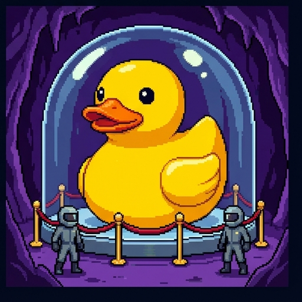
Why Supervillains Prefer to Be Paid in Crypto
Doctor Calamity has stolen the Great Harbor Duck. She wants one billion dollars to give it back.
You are the new intern in her Accounts office. Stealing the duck was the easy part. Your job is to work out how she can get paid.
Doctor Calamity has stolen the Great Harbor Duck. She wants one billion dollars to give it back. You're the new intern in her Accounts office. Stealing the duck was the easy part. Your job is to work out how she can get paid. Use the right arrow, or the Next button, to advance. Press F for fullscreen. Whenever it's your turn, I'll stop and wait for you.
Use → (or Next) to advance and reveal points. F = fullscreen.
Where You Stand Now
Rate each statement. There are no right answers, and you'll rate them again at the end.
A payment system should be able to block payments to criminals.
No company or government should be able to stop me from spending my own money.
If a tool is used mostly for gambling and crime, that is the fault of the users and not the tool.
Adults should be free to bet their savings on anything they like.
Using a country's worth of electricity is fine if the people using it pay the bill.
Rate each of these five statements, from how much you agree right now. There are no right answers, and you'll rate them again at the end. When you're done, press Submit.
Saved. You'll come back to these at the end.
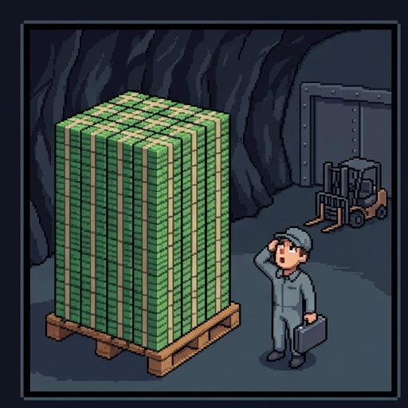
Option One: Cash
Your boss in Accounts is Penny. She starts with the oldest plan there is, a suitcase full of cash.
Your boss in Accounts is Penny. She starts with the oldest plan there is, a suitcase full of cash.
- A $100 bill weighs about one gram. One million dollars in $100 bills weighs about 10 kilograms, or 22 pounds.
- One billion dollars weighs about ten tons. That needs a forklift, not a suitcase.
- Somebody has to hand the cash over, and somebody has to collect it. The police wait at the pickup.
- Cash does have one advantage for a villain. Nobody has to give a name to use it.
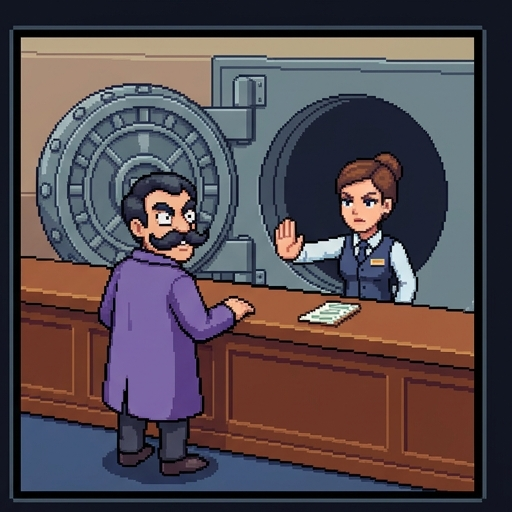
Option Two: The Bank
Doctor Calamity puts on a wig and a false mustache and goes to a bank. She asks to receive one billion dollars by transfer.
Doctor Calamity puts on a wig and a false mustache and goes to a bank. She asks to receive one billion dollars by transfer.
- The bank asks who she is. By law, a bank must check a customer's identity before it opens an account.
- The bank can refuse a payment that looks like crime, and it has to report it.
- The bank can freeze an account, so that the money in it cannot be moved.
- The bank can undo a payment that turns out to be fraud.
The Trouble With Both Options
Cash
The bank
The ransom would need a forklift, not a suitcase
Somebody has to collect the ransom in person, and the police wait there
She must prove who she is before an account is opened
The payment can be refused, and reported, if it looks like crime
The account can be frozen, so the money in it cannot be moved
The payment can be undone later if it turns out to be fraud
Each of these problems stands in Doctor Calamity's way. For each one, decide whether it comes from paying in cash, or from using the bank. Sort them, then press Check answers.
Cash is heavy and has to be handed over in person. The bank keeps the record of the payment, so it can ask who she is, refuse the payment, freeze the account, or undo the payment later.
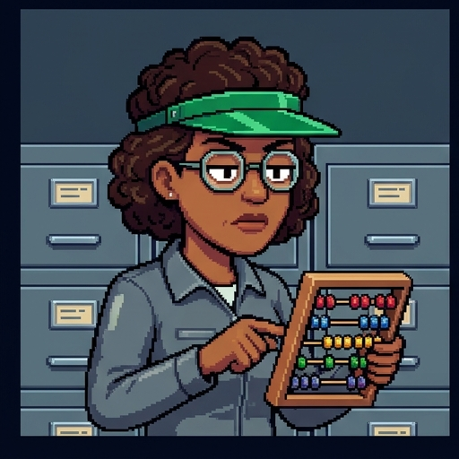
Most Money Is a List
Penny puts down her abacus. "Before we go on," she says, "you need to know what money is."
Penny puts down her abacus. Before you go on, she says, you need to know what money is.
- Some money is paper and coins. Most of it is numbers in a bank's records.
- A list of who owns how much is called a ledger. Your bank balance is one line in your bank's ledger.
- When you pay with a card, no cash moves. The bank lowers your line and raises the shop's line.
- So whoever keeps the ledger decides which payments happen.
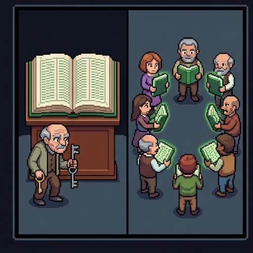
The Keeper's Four Jobs
Call whoever keeps the ledger the keeper. For most money, the keeper is a bank with a government behind it.
Call whoever keeps the ledger the keeper. For most money, the keeper is a bank with a government behind it. The keeper has four jobs.
- Keep the list. There is one official ledger, and the keeper holds it.
- Check who you are. The keeper knows the name behind every account.
- Say no, or undo. The keeper can refuse, freeze, or reverse a payment.
- Stand behind the money. The government insures deposits and works to keep prices steady.
Each job protects ordinary customers. Each job is also a power the keeper holds over them.
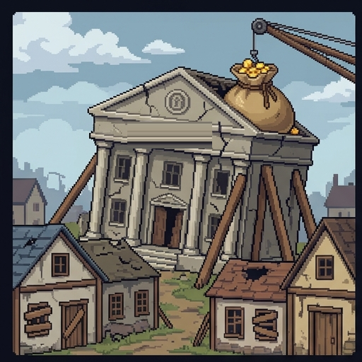
The Keeper Can Fail
Some people have serious reasons to distrust the keeper. Here are three, and all of them really happened.
Some people have serious reasons to distrust the keeper. Here are three, and all of them really happened.
- In 2008, large banks in the US and Europe lost huge sums on risky bets tied to home loans.
- Governments spent hundreds of billions of dollars of public money to keep those banks from collapsing.
- In the crisis that followed, millions of ordinary people lost their jobs or their homes.
- Many people concluded that the keepers had been careless with other people's money and were rescued anyway.
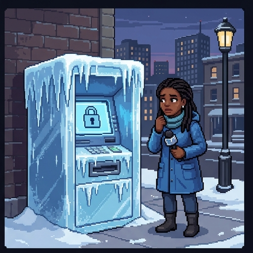
The Keeper Can Say No to the Wrong People
Amara is a reporter. After she wrote about corruption in her government, her bank card stopped working. Amara is invented, but cases like hers are real.
Amara is a reporter. After she wrote about corruption in her government, her bank card stopped working. Amara is invented, but cases like hers are real.
- In 2010 the website WikiLeaks published secret US government files. Visa, Mastercard, and PayPal stopped handling donations to it.
- In 2020, Nigerians protested against police violence. Bank accounts of people who organized the protests were frozen.
- In both cases the money was cut off before any court had found the account holders guilty of a crime.
- The power that turned Doctor Calamity away is the same power that stopped Amara.
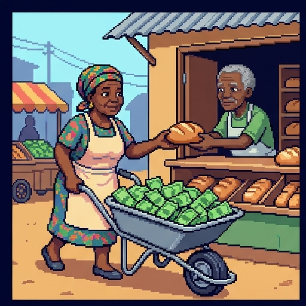
The Keeper Can Print
The keeper can also create money. Here is what can go wrong.
- Inflation means prices rise, so each dollar or peso buys less than it did.
- A government that controls the money can create more of it. If it creates far too much, prices explode.
- In Zimbabwe in 2008, prices doubled about once a day. The government printed a 100 trillion dollar bill.
- People who had saved for years found that their savings would not buy a loaf of bread.
Money can work with no bank in the middle if a network of peers keeps a shared public ledger.
A Proposal With No Keeper
In October 2008, in the middle of the bank crisis, someone using the name Satoshi Nakamoto posted a nine-page paper online.
In October 2008, in the middle of the bank crisis, someone using the name Satoshi Nakamoto posted a nine-page paper online.
- It described Bitcoin, the first cryptocurrency: digital money with no bank and no government in the middle.
- Bitcoin's first records, from January 2009, include a newspaper headline about a second bailout for banks.
- Nobody has proved who Satoshi is. Satoshi stopped writing in 2011 and has not been heard from since.
- The plan was to remove all four of the keeper's jobs at once. To see what that costs, you need to know how it works.
The Copy Problem
Digital money has a problem that paper money does not have.
Digital money has a problem that paper money does not have.
- A digital thing is easy to copy. You can send a photo to a friend and still have the photo.
- If a coin were just a file, you could pay two people with the same coin. This is called double spending.
- A keeper solves this easily. There is one ledger, and the keeper checks your line before every payment.
- Without a keeper, something else has to stop double spending. Bitcoin's answer has three parts.
Part One: Everyone Keeps the List
Here is the first part of Bitcoin's answer.
- Bitcoin still has a ledger. It is called the blockchain, and it lists every payment ever made.
- There is no single keeper. Thousands of computers around the world each hold a full copy.
- Anyone may join, and anyone may read the ledger. The whole list is public.
- That leaves two questions. Can someone change an old page? And who gets to write the next one?
Part Two: Pages and Fingerprints
The first question is whether someone could quietly change an old payment.
The first question is whether someone could quietly change an old payment.
- New payments are gathered into a page called a block. Bitcoin adds one block about every ten minutes.
- Every block gets a hash: a short code worked out from everything written in the block. Think of it as a fingerprint.
- Change one digit in a block and its fingerprint comes out completely different.
- Each block also records the fingerprint of the block before it. That is what links the blocks into a chain.
Try to Cheat the Chain
Here are four blocks from a small blockchain. Pick an old block and change a payment in it. See what happens. When you're ready, press Continue.
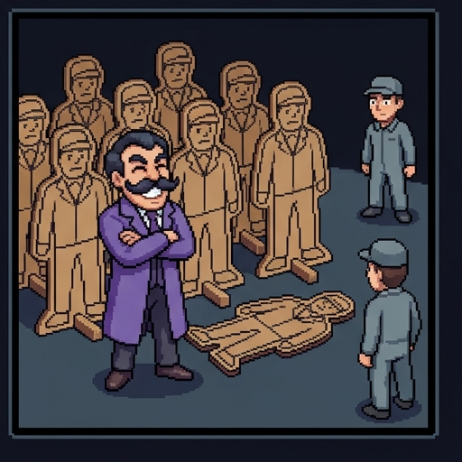
Part Three: Who Writes the Next Page?
Suppose the computers simply voted on the next block, with one vote each.
Suppose the computers simply voted on the next block, with one vote each.
- Doctor Calamity, still wearing her bank mustache, likes this plan.
- Anyone may join, and nobody checks names. So one person can pretend to be a million computers.
- Her cardboard henchmen would outvote everyone. She could approve a block that pays her twice.
- The computer scientist John Douceur described this attack in 2002. A vote only works if a voter is costly to fake.
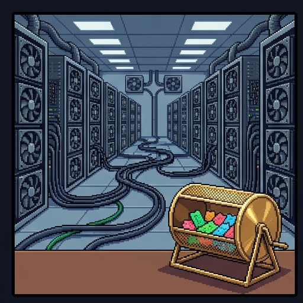
A Lottery You Enter With Electricity
So who does get to write the next block? A lottery decides.
- To write the next block, a computer has to win a guessing game. Each guess is like one lottery ticket.
- Guessing takes electricity. The more machines you run, the more tickets you hold.
- This is called proof of work. The computers that play are called miners.
- The winner writes the block and is paid in newly created coins. That payment is why miners play.
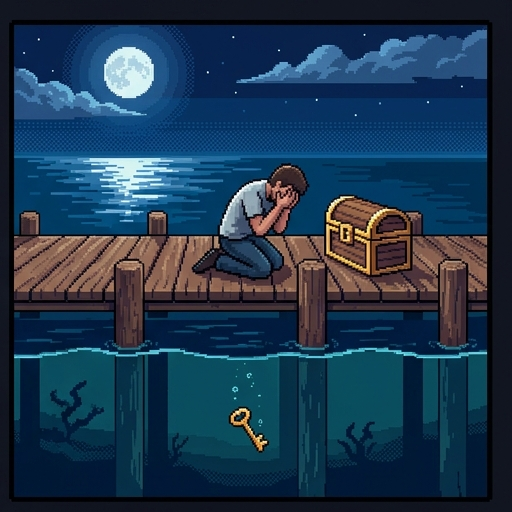
Keys, and No Undo
Next, how coins are owned, and what happens when something goes wrong.
- The blockchain holds no names. Coins belong to an address, which is a long string of letters and numbers.
- Each address has a secret key, like a password. Whoever has the key can spend the coins.
- With no keeper, there is no help desk. A lost key cannot be reset, and a payment cannot be reversed.
- In 2013 a hard drive holding the keys to about 8,000 bitcoins was thrown out by mistake in Wales. It is still in a landfill.
Why So Much Work?
So that payments are slow enough for people to check them by hand
So that the number of coins stays small and each one stays valuable
So that outvoting the honest miners costs more than a cheat can pay
So that only large companies with good computers are able to join
Proof of work makes every guess cost electricity. Why does Bitcoin need guessing to be costly? Pick an answer.
Fake voters are free, so Bitcoin counts work in place of votes. A cheat would have to out-guess all the honest miners together, and that costs more electricity than the cheat could gain.
Penny's Report
Penny reports to Doctor Calamity. A ransom paid in bitcoin gives her everything the bank would not.
Penny reports to Doctor Calamity. A ransom paid in bitcoin gives her everything the bank would not.
- No pickup. The coins cross the world in minutes, to an address with no name on it.
- No questions. Nobody checks who she is before she can receive them.
- No refusal and no undo. Nobody is able to block the payment or take it back.
- Amara wanted exactly these things too. Then Penny reads out what they cost.
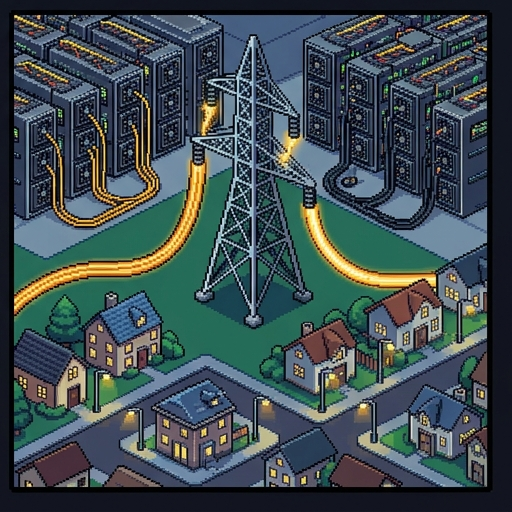
Cost One: Electricity
The first cost is electricity.
- The electricity is what makes cheating expensive. Miners use as much of it as the prize will pay for.
- Bitcoin mining uses about as much electricity each year as a mid-sized country such as Poland.
- Faster machines do not lower the total. The game gets harder, so that a block still takes ten minutes.
- Some newer coins use another method and far less power. Bitcoin is over half of all crypto by value, and nobody is in charge to order a change.
Cost Two: The Price
The second cost is the price.
- A government stands behind the dollar. It works to keep prices steady, and it collects taxes in dollars.
- Nothing stands behind a bitcoin. It earns no profit and pays no interest. It is worth what the next buyer will pay.
- So the price swings. Bitcoin lost more than half its value in 2018 and in 2022, and again from October 2025 to June 2026.
- Money that may lose half its value is hard to shop with or save in. It works better as a bet.
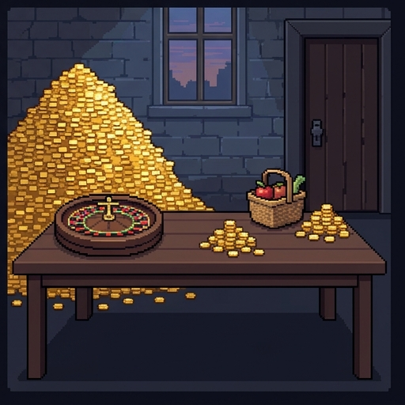
What Is It Actually Used For?
Ask one question. What can you do with crypto that you can't do with a bank card?
Ask one question. What can you do with crypto that you can't do with a bank card?
- You can bet on the price. This is the main use. In a 2025 US survey, nearly 1 adult in 10 held crypto to invest. About 1 in 50 paid with it.
- You can make a payment nobody can stop. That matters only to someone a keeper would stop.
- Some of those people are criminals. Others are people like Amara. Whether it serves them well is a separate question.
- Everyday shopping is rare. El Salvador made bitcoin official money in 2021. Few people used it, and in 2025 accepting it became optional.
Did It Help the People Shut Out?
Supporters often say crypto will rescue people the banks have failed. So far it has not done much for them.
Supporters often say crypto will rescue people the banks have failed. So far it has not done much for them.
- About 1.3 billion adults have no financial account. Six in ten of them have no smartphone, and most crypto wallets need one.
- The price swings. A family living week to week cannot keep savings in something that may lose half its value.
- In El Salvador, the people most likely to use bitcoin were young, educated, and already had bank accounts.
- To buy food, Amara must trade coins for local money at an exchange. From 2021 to 2023 Nigeria barred its banks from serving them.
Crypto's own keepers fail too. The exchange FTX collapsed in 2022 with about 8 billion dollars of customers' money missing.
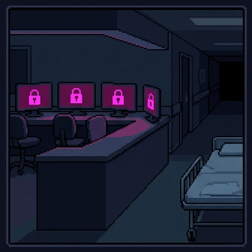
Cost Three: Real Ransoms
Doctor Calamity is made up. Ransoms paid in crypto are real.
Doctor Calamity is made up. Ransoms paid in crypto are real.
- Ransomware is software that locks a victim's files. The attacker demands a payment to unlock them.
- Hospitals, schools, and cities have been hit. A 2024 attack on a London lab postponed over 10,000 hospital appointments.
- Ransomware gangs collected more than one billion dollars in crypto in 2023, and over 800 million in each of 2024 and 2025.
- Before crypto, a ransom of this kind had the pickup problem. Crypto removed it.
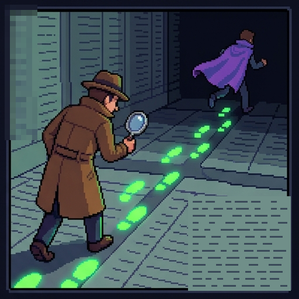
The List Is Public
There is one more fact about the ledger, and it cuts against the villain.
- Every bitcoin payment stays on the public ledger forever. Addresses carry no names, but the trail between them can be followed.
- In 2021 criminals locked the computers of Colonial Pipeline, a major US fuel pipeline. The company paid 75 bitcoins.
- The FBI followed the coins and took back about 64 of them within a month.
- So "most crypto is crime" is false. Firms that track it put crime at about 1 percent of the crypto activity they can trace.
Build a Coin
Design a kind of money by setting three switches. Each switch is one thing a keeper does. Try different settings. When you're ready, press Continue.
Built In, or Growing Pain?
A payment sent to a scammer cannot be reversed by anyone
Protecting Bitcoin's ledger uses a country's worth of electricity, and nobody is in charge to order a change
The price can fall by half because nothing stands behind it
A ransom can be collected with no pickup and no name
Wallet apps are confusing for people who are new to them
Tax rules for crypto are unclear in many countries
Some crypto advertising has made promises that were not true
Some of crypto's problems could be fixed with better apps or clearer laws. Check every problem that comes from having no keeper, then press Check answers.
Confusing apps, unclear tax rules, and dishonest ads can all be fixed without changing what crypto is. The other four come from removing the keeper.
The Door With No Doorman
Think of the keeper as a doorman. Each fix for crypto's problems puts some kind of doorman back.
Think of the keeper as a doorman. Each fix for crypto's problems puts some kind of doorman back. On the left is the door with no doorman, which is Bitcoin. Nobody can block a payment. Doctor Calamity gets her ransom. Amara's coins arrive too, but she still has to turn them into money she can spend. Nobody can undo a mistake, check a name, or steady the price. On the right is the door with a doorman, which means banks, and most fixes. Somebody can block a payment. A ransom is stopped only if the doorman catches it, and the same somebody decides about Amara. Coins tied to the dollar work this way. The company behind them can freeze any account, and a 2025 US law makes that power a condition of issuing them. Yet in 2024 most crypto crime moved in these coins.
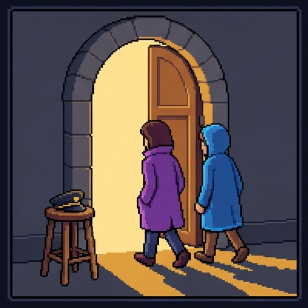
Nobody can block a payment. Doctor Calamity gets her ransom. Amara's coins arrive too, but she still has to turn them into money she can spend.
Nobody can undo a mistake, check a name, or steady the price.
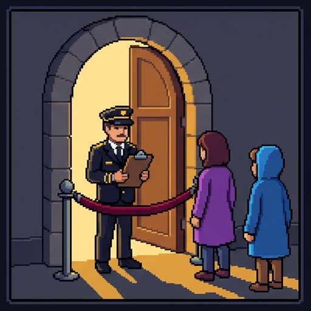
Somebody can block a payment. A ransom is stopped only if the doorman catches it, and the same somebody decides about Amara.
Coins tied to the dollar work this way. The company behind them can freeze any account, and a 2025 US law makes that power a condition of issuing them. Yet in 2024 most crypto crime moved in these coins.
Some designs settle political questions, such as who gets to use them.
Do Designs Take Sides?
In 1980 the scholar Langdon Winner asked whether a design can have politics built into it.
In 1980 the scholar Langdon Winner asked whether a design can have politics built into it.
- A common view says tools are neutral. Only the people who use them are good or bad.
- Winner disagreed. He argued that some designs settle in advance who gets through and who is kept out.
- His best-known example was a set of low bridges said to be built to block buses. Historians dispute that story.
- Bitcoin fits his idea better. Its design settles that nobody can be stopped, and that was chosen on purpose.
Your Call
Yes. People like Amara need it, and the crime is a price worth paying.
Yes, but only if its electricity use and scams can be brought down.
No. Stopping ransoms and fraud matters more, so keep the keeper.
No. Fix the banks instead, so that fewer people need a way out.
Should there be a kind of money that no bank, company, or government is able to stop? This one isn't graded. Pick the answer closest to your view, and read its note.
Every answer here accepts a cost. A doorman who can block a ransom can also block a reporter. A system with no doorman carries both.
Where You Stand Now
These are your ratings from the start. Rate each statement again.
These are your ratings from the start. Rate each statement again, then press Submit.
Saved. Now for a short recap.
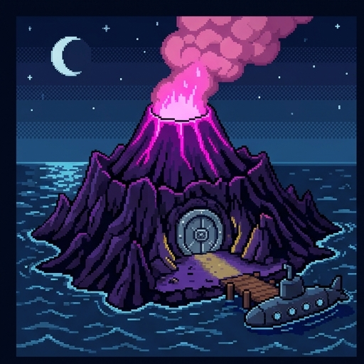
The Duck Goes Home
Here is what to take away.
- A keeper holds the ledger, checks names, can refuse or undo a payment, and has a government behind it.
- Bitcoin replaces the keeper with public copies, linked fingerprints, and a costly lottery called proof of work.
- Its costs come from that design: heavy electricity use, a price that acts like a bet, no undo, and payments nobody can stop.
- Most crypto use is betting. As money it has worked well for ransoms, and poorly for most people the banks shut out.
The city paid in bitcoin. Doctor Calamity posted a photo of her screen to brag, with her secret key in plain view. A stranger emptied the address within the hour, and the photo led the police to the island. Penny had sent her a memo about keys.
For Further Reading
If you'd like to go further, here are some good places to start, each with a note on why it's worth your time. Thanks for playing.
- Satoshi Nakamoto, “Bitcoin: A Peer-to-Peer Electronic Cash System” (2008). Read online. The nine-page paper that proposed Bitcoin.
- Langdon Winner, “Do Artifacts Have Politics?” Daedalus 109, no. 1 (1980). JSTOR. The argument that some designs settle political questions in advance.
- Bruce Schneier, “There’s No Good Reason to Trust Blockchain Technology,” Wired (2019). Read online. A security expert on why blockchains move trust instead of removing it.
- Fernando E. Alvarez, David Argente, and Diana Van Patten, “Are Cryptocurrencies Currencies? Bitcoin as Legal Tender in El Salvador,” NBER Working Paper 29968 (2022). Read online. Who actually used bitcoin once El Salvador made it official money.
- Bank for International Settlements, “Cryptocurrencies: Looking beyond the Hype,” chapter 5 in BIS Annual Economic Report 2018. Read online. Central bankers on what decentralized money can and cannot do.
About this lesson. Brendan Shea, PhD, wrote this lesson with help from AI tools. Claude (Anthropic) helped draft the text and code and check facts, and the illustrations were made with AI image generators. The narrator’s voice is synthetic (Google Gemini text-to-speech). The author reviewed everything and is responsible for any errors.